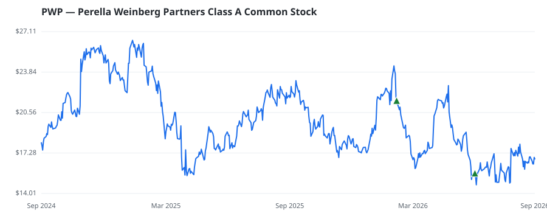

bullish · bearish · n/a — dots: price>SMA10 · SMA10>SMA50 · SMA50>SMA200 · up>down volume (20d)
Banks · small cap
Members who bought PWP earned a dollar-weighted -7.0% from their disclosure dates, versus +8.6% for the S&P 500 over the same holding windows (-15.6% alpha).

▲ green = a disclosed purchase · ▼ red = a disclosed sale (plotted on disclosure date)
Perella Weinberg Partners is an independent advisory firm that provides strategic and financial advice to a wide range of clients. The Company's activities as an investment banking advisory firm constitute a single business segment that provides a range of advisory services, including advice related to strategic and financial decisions, mergers and acquisitions execution, shareholder and defense advisory, financing and capital solutions advice with resources focused on restructuring and liability management, capital markets advisory, private capital placement, as well as specialized underwriti FINANCE SERVICES · website
| Revenue | $750.9M | Net income | $48.0M |
|---|---|---|---|
| Operating income | $48.0M | Diluted EPS | $0.47 |
| Assets | $797.6M | Equity | $-127.4M |
| Member | Chamber | Out-performer | Disclosed buys $ | Return on buys |
|---|---|---|---|---|
| Gilbert Cisneros | house | — | $16K | -7.0% |
Disclosed $ figures are bracket midpoints — filings report ranges (e.g. $1,001–$15,000), not exact amounts.